observed <- c(11, 25, 9)Practical 5 - Analysing count data
Testing for differences in proportions
Learning Outcomes (LOs)
Here’s what you should know and be able to do after completing this practical:
LO1: Perform, interpret, and report the results from a chi-square goodness of fit test
LO2: Perform, interpret, and report the results from a chi-square contingency table test
LO3: Perform, interpret, and report the results from a fisher’s exact test
LO4: Explain when to use a fisher’s exact test
LO5: Create contingency tables of data
LO6: Plot count data using barplots and mosaic plots
LO7: Represent frequency data as counts, proportions, and percentages
Tutorial
Chi-squared goodness of fit test
The chi-square goodness-of-fit test is used to check whether an observed distribution matches an expected distribution.
In other words, it tests if the frequencies you observed in your data are consistent with what you would expect under a hypothesis.
Example:
We survey three equally sized areas and count the number of elephants in each. We count 11, 25, and 9 elephants.
Observed counts:
If the population of elephants were spread equally across the three areas, we would expect to observe 1/3 of the population in each. In other words, out of a total of 45 elephants (11 + 25 + 9), we would expect to see 15, 15, 15.
When creating our “expected” values, we have to state these as proportions and they must sum to 1:
expected <- c(1/3, 1/3, 1/3) # Use fractions to ensure the three elements add up to 1To perform a chi-squared goodness of fit test we now simply enter our expected and observed values:
chisq.test(observed, p = expected)
Chi-squared test for given probabilities
data: observed
X-squared = 10.133, df = 2, p-value = 0.006303To report the results, we need to calculate the actual percentages observed in each area.
Start by calculating the total number of elephants:
total <- sum(11, 25, 9)And then divide the count in each area by the total (multiply by 100 to convert to %)
11/total*100 # Area 1[1] 24.4444425/total*100 # Area 2[1] 55.555569/total*100 # Area 3[1] 20So we see approximately 24.4 % in area 1, 55.6 % in area 2, and 20 % in area 3
Report the results:
The chi-square goodness-of-fit test showed that elephant counts differed significantly across the three areas (χ² = 10.133, df = 2, p = 0.006303). Elephants were not evenly distributed, with 24.4 % in Area 1, 55.6 % in Area 2, and 20 % in Area 3.
Plotting the results:
We could plot the data using a barplot:
barplot(observed,
names = c("Area 1", "Area 2", "Area 3"),
ylab = "Number of Elephants",
xlab = "Area",
las = 1)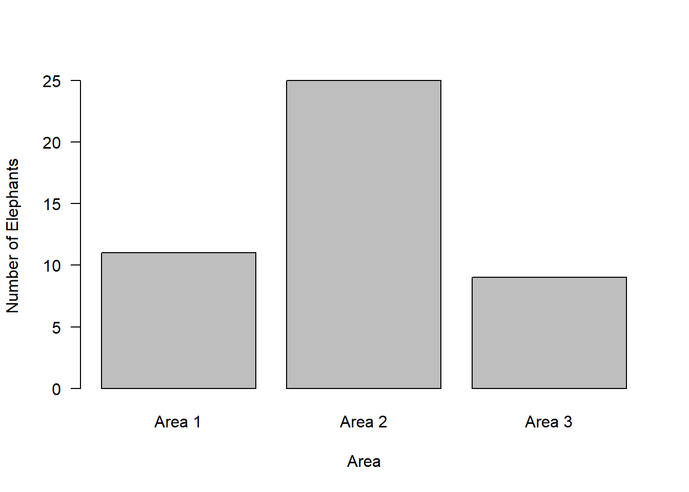
Note we could also plot these values as proportions.
proportions <- observed / total
barplot(proportions,
names = c("Area 1", "Area 2", "Area 3"),
ylab = "Proportion of Total",
xlab = "Area",
las = 1,
ylim = c(0, 1))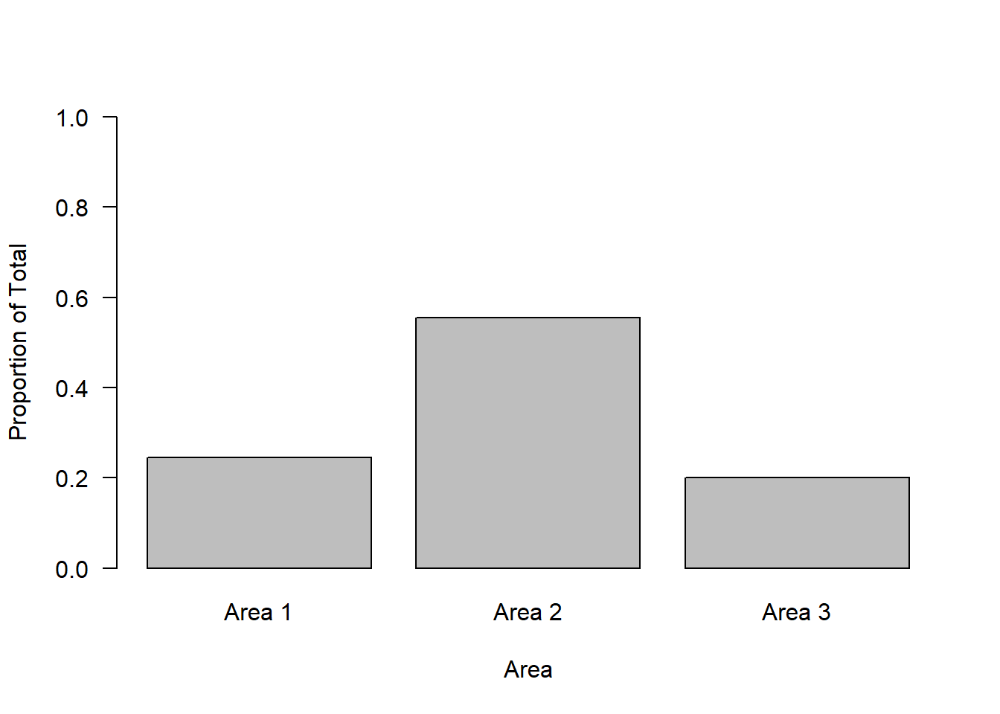
Or we could plot the values as percentages by simplying multiplying the proportions by 100:
barplot(proportions * 100,
names = c("Area 1", "Area 2", "Area 3"),
ylab = "Percentage of Total",
xlab = "Area",
las = 1,
ylim = c(0, 100))What if the areas weren’t equally sized?
This might lead us to change our hypothesis regarding what the expected values would be.
Let’s assume areas 1 and 3 were half as large as area 2. We would expect to see twice as many elephants in area 2 compared to 1 and 3:
expected <- c(1/4, 1/2, 1/4)
chisq.test(observed, p = expected)
Chi-squared test for given probabilities
data: observed
X-squared = 0.73333, df = 2, p-value = 0.693You can now have a go at reporting the results from the above!
Chi-squared test for association
A chi-square test for association is also know as:
chi-square contingency table test
chi-square test of independence
This test examines whether categorical variables are associated with each other.
To look at an example we’re going to use the Titanic dataset in R - this is a built-in dataset
Titanic, , Age = Child, Survived = No
Sex
Class Male Female
1st 0 0
2nd 0 0
3rd 35 17
Crew 0 0
, , Age = Adult, Survived = No
Sex
Class Male Female
1st 118 4
2nd 154 13
3rd 387 89
Crew 670 3
, , Age = Child, Survived = Yes
Sex
Class Male Female
1st 5 1
2nd 11 13
3rd 13 14
Crew 0 0
, , Age = Adult, Survived = Yes
Sex
Class Male Female
1st 57 140
2nd 14 80
3rd 75 76
Crew 192 20Using the question mark will tell you about the dataset:
?TitanicThe Titanic object in R is a table with 4 sub elements. Accessing elements from a table is a little bit odd. Here are some examples of how to inspect it.
NOTE: If when creating an object you wrap a line of code in parentheses (), R will also print the object that you just created
Sum the number of passengers of each class
(class <- apply(Titanic, c(1), sum)) 1st 2nd 3rd Crew
325 285 706 885 Sum the number of passengers of each sex
(sex <- apply(Titanic, c(2), sum)) Male Female
1731 470 Sum the number of passengers of each age class
(age <- apply(Titanic, c(3), sum))Child Adult
109 2092 Sum the number of passengers who survived (Yes or No)
(survival <- apply(Titanic, c(4), sum)) No Yes
1490 711 We can do the same over multiple variables to start creating contingency tables:
For example how many people of each class survived:
(classSurvival <- apply(Titanic, c(1, 4), sum)) Survived
Class No Yes
1st 122 203
2nd 167 118
3rd 528 178
Crew 673 212We can then use these for various plot functions:
par(mfrow=c(2,2))
barplot(class, las = 1, ylab = "Number of passengers", xlab = "Class", ylim = c(0, 1000))
barplot(sex, ylab = "Number of passengers", xlab = "Sex", ylim = c(0, 2000))
barplot(age, ylab = "Number of passengers", xlab = "Age", ylim = c(0, 2500))
barplot(survival, ylab = "Number of passengers", xlab = "Survived", ylim = c(0, 1600))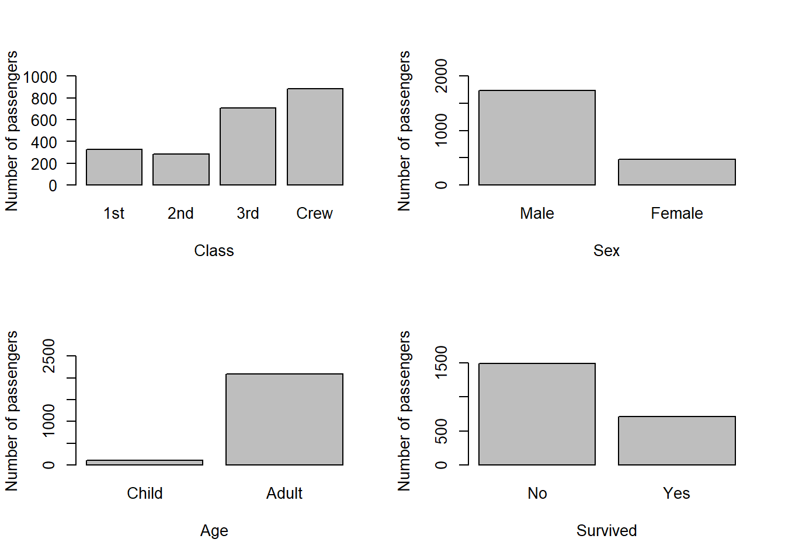
par(mfrow=c(1,1))
barplot(classSurvival, ylab = "Number of passengers", xlab = "Survived", ylim = c(0, 1600), legend.text = T, args.legend = list(bty = "n", title = "Class"))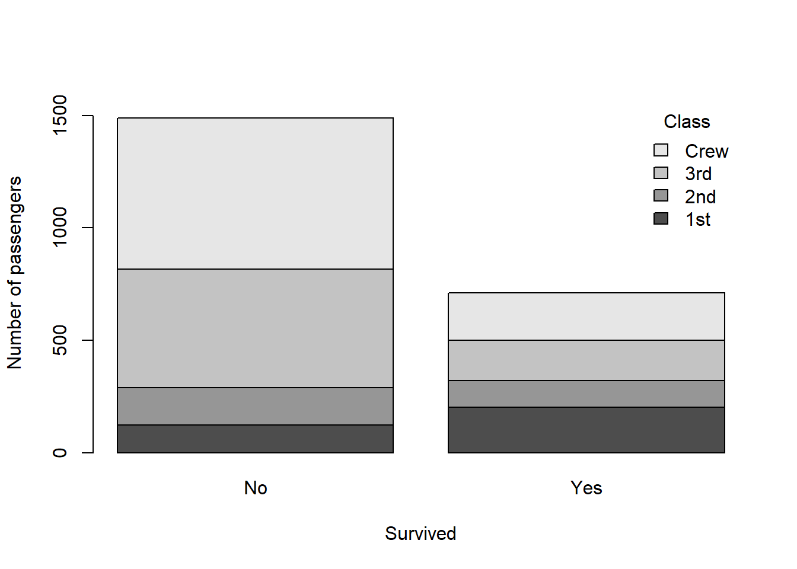
One other way to plot count data across multiple categorical variables is with a mosaic plot:
install.packages("graphics")Warning: package 'graphics' is in use and will not be installedlibrary(graphics)
mosaicplot(classSurvival, color = TRUE, main = NULL)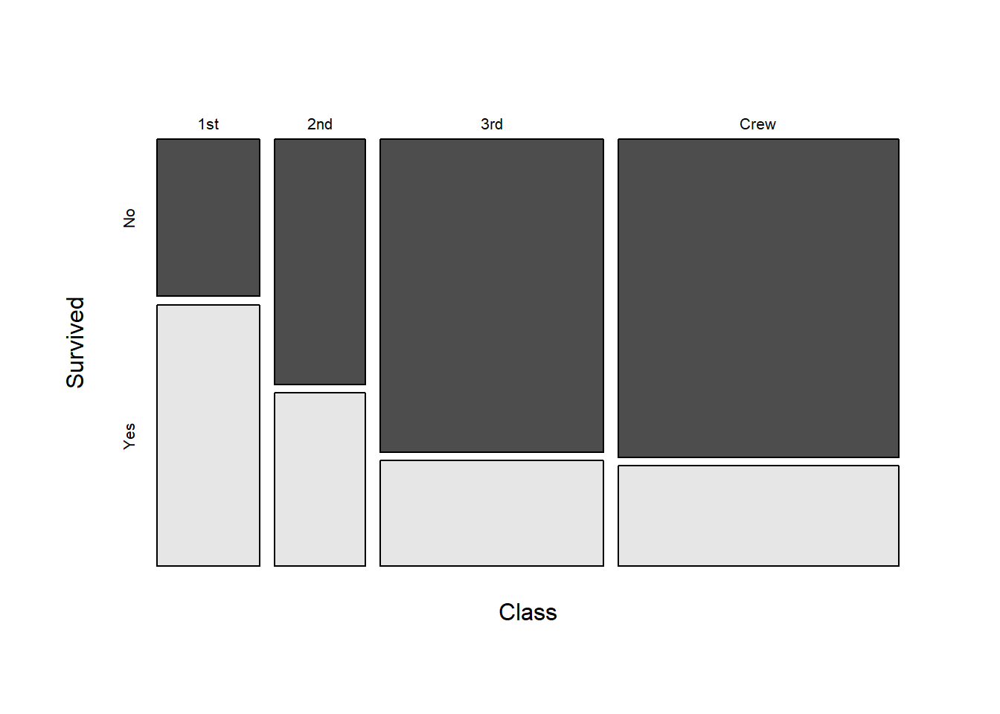
Finally, we can look at the numbers of observations in each group:
classSurvival Survived
Class No Yes
1st 122 203
2nd 167 118
3rd 528 178
Crew 673 212And we can use the function prop.table() to look at the proportions (of the total) in each group:
prop.table(classSurvival) Survived
Class No Yes
1st 0.05542935 0.09223080
2nd 0.07587460 0.05361199
3rd 0.23989096 0.08087233
Crew 0.30577010 0.09631985This shows us, out of 100 %, what proportion of individuals survived from each class i.e., out of all possible observations, which is equal to 2201:
sum(classSurvival)[1] 2201For example we see that ~ 5.5 % of 1st-class passengers did not survive whereas ~ 9.2 % survived. But for 3rd-class: ~ 24 % did not survive and ~ 8 % survived.
We can perform a chi-square test for association to see if survival probability is associated with passenger class.
We are essentially asking the following question: Did survival probability differ according to class?
Start by looking at the data:
barplot(classSurvival, ylab = "Number of passengers", xlab = "Survived", ylim = c(0, 2000), legend.text = T, args.legend = list(bty = "n", title = "Class"), las = 1)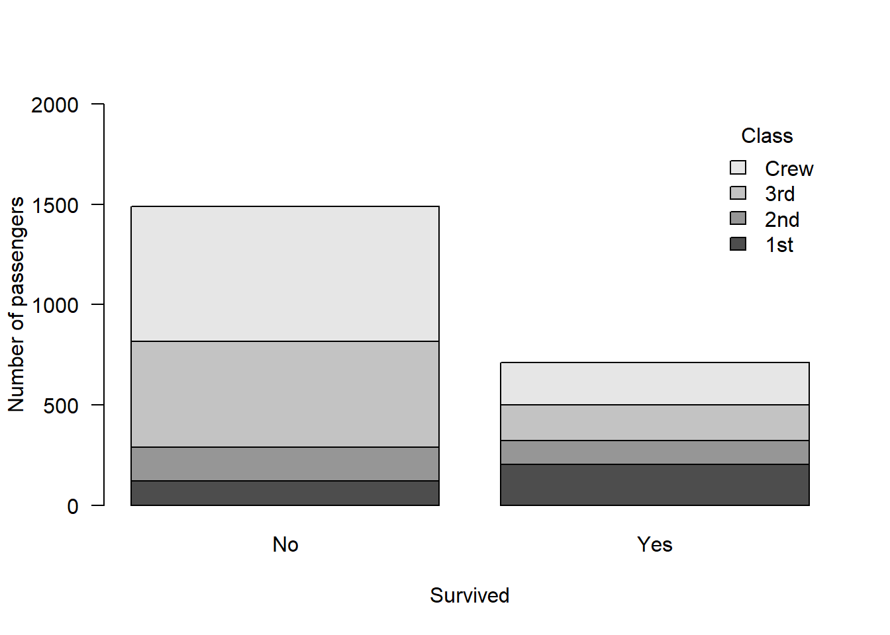
Alternatively plot the proportions:
barplot(prop.table(classSurvival), ylab = "Proportion of passengers", xlab = "Survived", ylim = c(0, 1), legend.text = T, args.legend = list(bty = "n", title = "Class"), las = 1)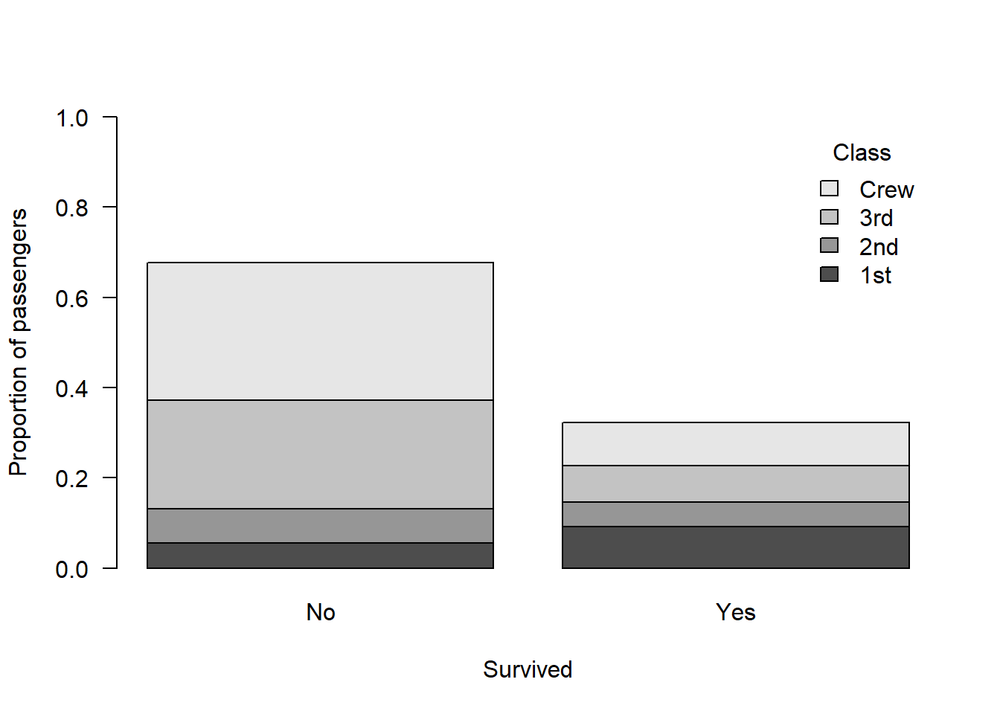
To perform the chi-squared test for association, we again simply use the chisq.test() function. However this time, rather than state observed versus expected values, we simply present the contingency table classSurvival. The null hypothesis is that the counts in each cell are equal.
Note that correct = F disables something called “Yates’ continuity correction”.
Yates’ continuity correction is a method that has previously been used when cell frequencies were < 5 but nowadays we tend to use Fisher’s exact test in this situation. For more details, see: https://doi.org/10.1016/B978-012088770-5/50045-9 (page 99):
chisq.test(classSurvival, correct = F)
Pearson's Chi-squared test
data: classSurvival
X-squared = 190.4, df = 3, p-value < 2.2e-16This is a highly significant result which suggests there is an association between class and survival. In other words, the survival probability differed according to class.
Let’s calculate % survival for each class in order to describe this association:
Importantly here, we want to calculation proportions for each class separately, so we can’t simply use the values from prop.table(). We have to do it manually:
classSurvival Survived
Class No Yes
1st 122 203
2nd 167 118
3rd 528 178
Crew 673 212(class1 <- 122 + 203)[1] 325(class2 <- 167 + 118)[1] 285(class3 <- 528 + 178)[1] 706(crew <- 673 + 212)[1] 885(class1prob <- 203/class1*100)[1] 62.46154(class2prob <- 118/class2*100)[1] 41.40351(class3prob <- 178/class3*100)[1] 25.21246(crewProb <- 212/crew*100)[1] 23.9548Report the results:
The results from our chi-squared test for association indicated that there was an association between class and survival aboard the Titanic (X2 = 190.4, df = 3, p < 2.2x10-16). Specifically, survival probability for each class of passenger was as follows: 1st class = 62.5%, 2nd class = 41.4%, 3rd class = 25.2%, and Crew = 24 %.
Note that the reason this result came about was because higher class passengers were given priority to disembark the Titanic on to the lifeboats
Sex and survival
Let’s use a chi-squared test for association to see if there was an association between survival rate and sex:
(sexSurvival <- apply(Titanic, c(2, 4), sum)) Survived
Sex No Yes
Male 1364 367
Female 126 344chisq.test(sexSurvival, correct = F)
Pearson's Chi-squared test
data: sexSurvival
X-squared = 456.87, df = 1, p-value < 2.2e-16Clearly there is an association here too - a greater proportion of female passenger were given priority to gain access to the lifeboats.
Fisher’s exact test
Note that if we had a small cell count (< 5) in any of our cells, we could use Fisher’s exact test.
We don’t need to do it in either of the previous two examples, so let’s simulate an example.
Let’s imagine we give two different diets to fish and see if they gain weight.
We only look at 15 fish in total. Here’s the simulated data of counts of fish who gained weight versus not, by diet:
weights <- matrix(c(7, 1, 2, 5), nrow = 2, byrow = TRUE)
rownames(weights) <- c("Diet A", "Diet B")
colnames(weights) <- c("Gained weight", "Did not gain weight")
weights Gained weight Did not gain weight
Diet A 7 1
Diet B 2 5We can again plot the data using a barplot but this time let’s put the bars next to each other using beside = T:
barplot(weights,
beside = TRUE,
legend.text = TRUE,
args.legend = list(title = "Diet", bty = "n", x = "top"),
ylab = "Number of Fish",
xlab = "Diet", las = 1)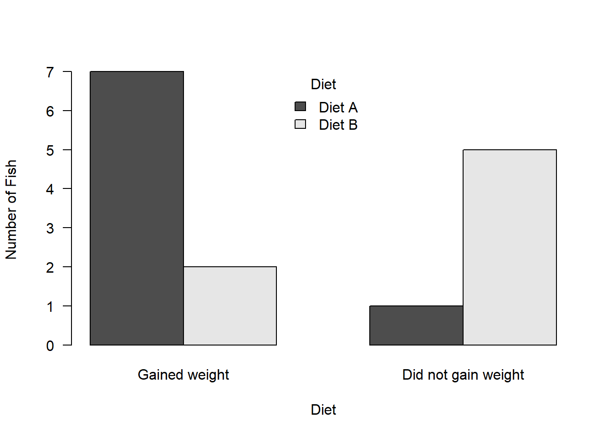
If we perform a chi-square contingency table test we will get a warning:
chisq.test(weights)Warning in chisq.test(weights): Chi-squared approximation may be incorrect
Pearson's Chi-squared test with Yates' continuity correction
data: weights
X-squared = 3.2254, df = 1, p-value = 0.0725This warning is because some of the expected counts are less than 5.
Hence we should use the fisher.test()
fisher.test(weights)
Fisher's Exact Test for Count Data
data: weights
p-value = 0.04056
alternative hypothesis: true odds ratio is not equal to 1
95 percent confidence interval:
0.8646648 934.0087368
sample estimates:
odds ratio
13.59412 Creating your own contingency table
Above we created our own contingency table. Here is some more guidance on how to do this if you had to do it in R by hand:
We use the matrix() function to specify a string of numbers
We have to enter the numbers in the following order: column 1 then column 2
We also have to tell R how many rows using nrow
We could create the example from the lecture which examines lung cancer prevalence in men and women who smoke:
cancerBySex <- matrix(c(100, 96, 201, 200), nrow = 2)We then have to state what the names are for the table:
dimnames(cancerBySex) = list(c("Men", "Women"), c("No cancer", "Cancer"))Ask R to print the object to check you did it right - does it match the lecture slides?
cancerBySex No cancer Cancer
Men 100 201
Women 96 200Using data from a .csv file
If you had data stored in a .csv file and you wanted to create a contingency table, this is quite straightforward:
First read in the data (use the “Spirometry.csv”) file:
data <- read.csv(file.choose(), header = T, stringsAsFactors = T)Take a quick look:
head(data) Height Age Flow Sex RespInfection Asthma
1 167.5 19 483.0 F N N
2 177.0 18 530.0 M N N
3 167.5 18 447.0 F N N
4 157.5 18 390.0 F N Y
5 190.0 19 551.6 M N N
6 170.0 18 301.6 F N NWe can see that these data include things like information on people of different sexes and if they have respiratory infections.
Create contingency table of respiratory infection against sex:
(count <- table(data$Sex, data$RespInfection))
N Y
F 110 60
M 66 12Plot the table:
barplot(count, beside = T, ylab = "Number of people", xlab = "Asthma", las = 1, ylim = c(0, 250), legend.text = T, args.legend = list(bg = "white", cex = 1.2, title = "Sex"), names = c("No", "Yes"))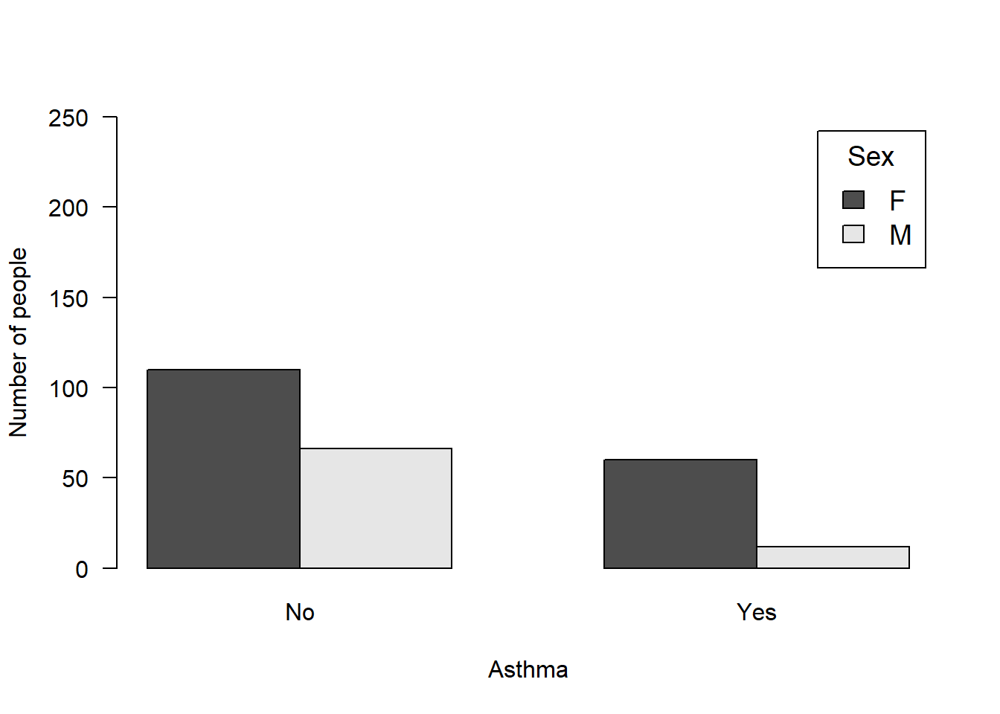
Tasks
NoteTask 1
Write the results for the analysis for sexSurvival. Remember to report the percentages for each category - you may need to calculate the percentages yourself (write the code for this too!):
NoteTask 2
Write the code to conduct an appropriate chi-squared test the examine if there is a difference in proportion of asthma sufferers amongst men and women (using the Spirometry data):
NoteTask 3
Write the code to create your own 2 x 2 contingency table which examines male and female orangutans in pristine versus degraded habitat.
Specifically, you observe 10 males in pristine habitat and 3 in degraded; and you observe 12 females in pristine habitat versus 6 in degraded.
NoteTask 4
Write the code to conduct an appropriate analysis to examine if there is an association between sex and habitat type in the number of orangutans you observed
Bonus
If you have completed all of the above (and for future reference), here is a useful guide with code to explore the Titanic data in different ways (using different visualisations): https://cran.r-project.org/web/packages/explore/vignettes/explore_titanic.html
I have copied the code below from this webpage, but you will need to view the webpage to understand what each of the lines of code do.
To run the code from that link you will need to install a few packages.
install.packages("dplyr", repos = "https://cloud.r-project.org/")Installing package into 'C:/Users/sbiwk/AppData/Local/R/win-library/4.5'
(as 'lib' is unspecified)package 'dplyr' successfully unpacked and MD5 sums checked
The downloaded binary packages are in
C:\Users\sbiwk\AppData\Local\Temp\RtmpOIMU06\downloaded_packagesinstall.packages("tibble", repos = "https://cloud.r-project.org/")Installing package into 'C:/Users/sbiwk/AppData/Local/R/win-library/4.5'
(as 'lib' is unspecified)package 'tibble' successfully unpacked and MD5 sums checked
The downloaded binary packages are in
C:\Users\sbiwk\AppData\Local\Temp\RtmpOIMU06\downloaded_packagesinstall.packages("explore", repos = "https://cloud.r-project.org/")Installing package into 'C:/Users/sbiwk/AppData/Local/R/win-library/4.5'
(as 'lib' is unspecified)package 'explore' successfully unpacked and MD5 sums checked
The downloaded binary packages are in
C:\Users\sbiwk\AppData\Local\Temp\RtmpOIMU06\downloaded_packageslibrary(dplyr)Warning: package 'dplyr' was built under R version 4.5.1
Attaching package: 'dplyr'The following objects are masked from 'package:stats':
filter, lagThe following objects are masked from 'package:base':
intersect, setdiff, setequal, unionlibrary(tibble)Warning: package 'tibble' was built under R version 4.5.1library(explore)Warning: package 'explore' was built under R version 4.5.2titanic <- as_tibble(Titanic)
titanic %>% describe_tbl(n = n)2 201 (2.2k) observations with 5 variables
0 observations containing missings (NA)
0 variables containing missings (NA)
0 variables with no variancetitanic %>% describe()# A tibble: 5 × 8
variable type na na_pct unique min mean max
<chr> <chr> <int> <dbl> <int> <dbl> <dbl> <dbl>
1 Class chr 0 0 4 NA NA NA
2 Sex chr 0 0 2 NA NA NA
3 Age chr 0 0 2 NA NA NA
4 Survived chr 0 0 2 NA NA NA
5 n dbl 0 0 22 0 68.8 670titanic %>% head(10)# A tibble: 10 × 5
Class Sex Age Survived n
<chr> <chr> <chr> <chr> <dbl>
1 1st Male Child No 0
2 2nd Male Child No 0
3 3rd Male Child No 35
4 Crew Male Child No 0
5 1st Female Child No 0
6 2nd Female Child No 0
7 3rd Female Child No 17
8 Crew Female Child No 0
9 1st Male Adult No 118
10 2nd Male Adult No 154titanic %>% explore(Class, n = n)
titanic %>% describe(Class, n = n)variable = Class
type = character
na = 0 of 2 201 (0%)
unique = 4
1st = 325 (14.8%)
2nd = 285 (12.9%)
3rd = 706 (32.1%)
Crew = 885 (40.2%)titanic %>% explore_all(n = n)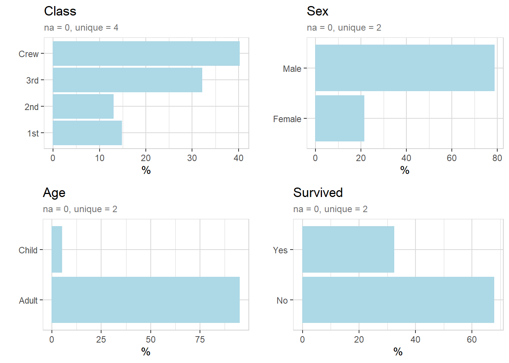
titanic %>% explore(Class, target = Survived, n = n, split = FALSE)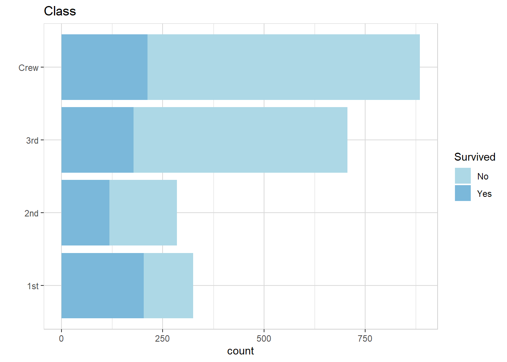
titanic %>% explore(Class, target = Survived, n = n, split = TRUE)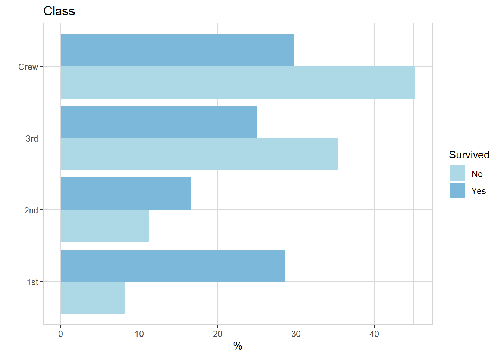
titanic %>% explore(Sex, target = Survived, n = n)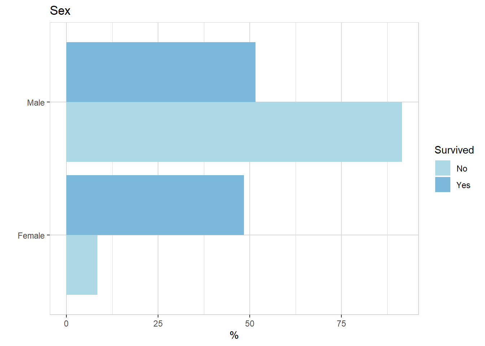
titanic %>% explore(Age, target = Survived, n = n)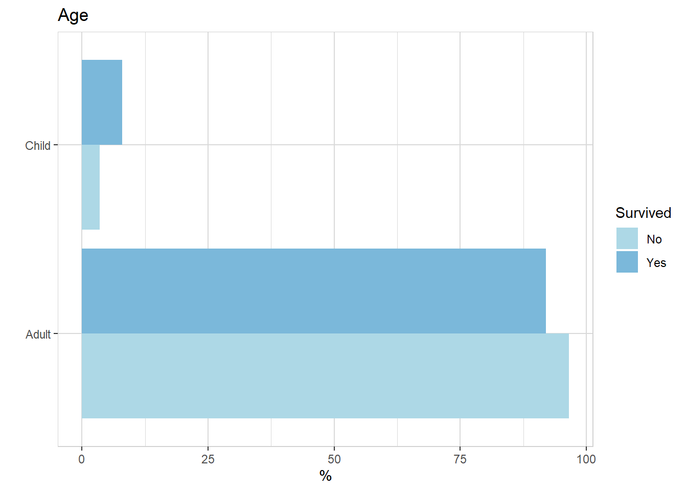
titanic %>% explain_tree(target = Survived, n = n)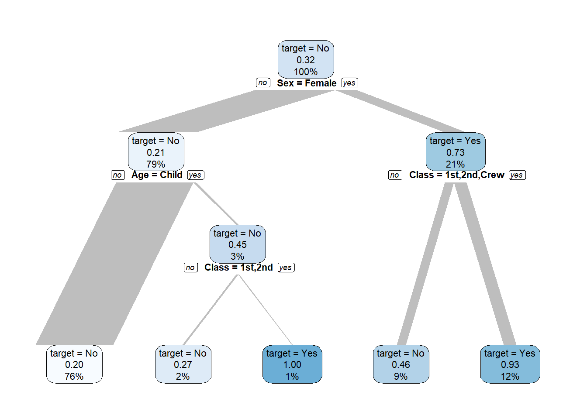
titanic %>% explore(Age, target = Class, n = n)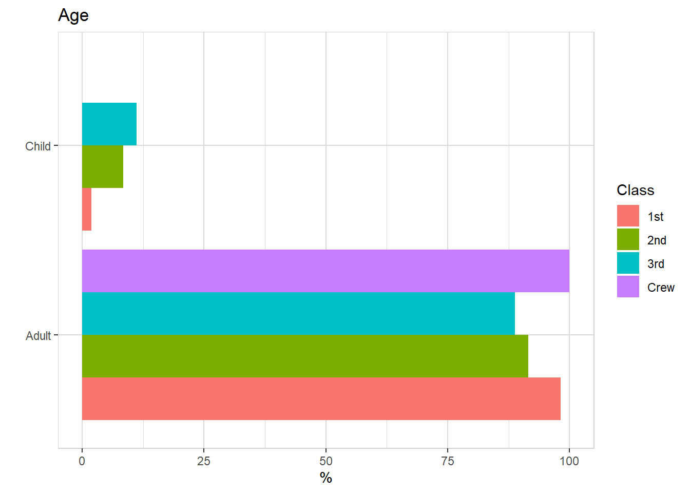
titanic %>% explore(Sex, target = Class, n = n)